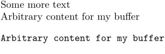

Contents
Summary
The command \definebuffer defines a named buffer class.
Settings
| \definebuffer[...][...][...=...,...] | |
| [...] | name |
| [...] | buffer |
| ...=...,... | inherits from \setupbuffer |
| Option | Explanation |
|---|---|
| Name of the new buffer class | |
| Optional buffer class to inherit from | |
Description
Named buffer classes replace the default buffer commands with special versions wherein the
buffer
part is replaced by your desired command.
On the downside, these newly defined buffers do not support an optional argument like \startbuffer does.
Examples
Example 1
-
\definebuffer[mybuffer] \startmybuffer Arbitrary content for my buffer \stopmybuffer Some more text \getmybuffer \typemybuffer
gives
- 